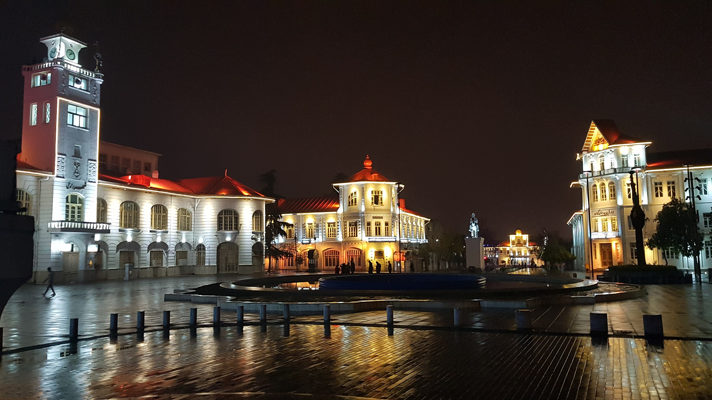
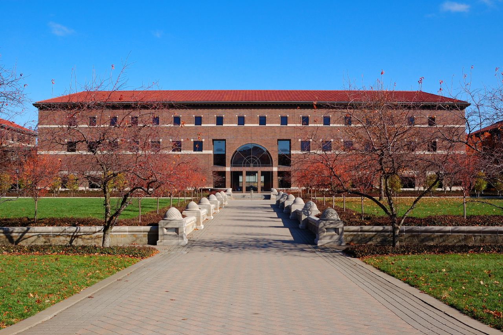

About Me
I was born in Rasht, a rainy city in northern Iran.
From age seven, I became enthusiastic about astronomy and later joined the Thaqib Astronomy Association in Rasht and enjoyed exploring the wonders of night sky. At the age of sixteen, I was awarded the gold medal in the International Olympiad in Astronomy and Astrophysics in 2007 after two national gold medals and before an international bronze medal in 2008.

Then I started a long and complex relationship with theoretical physics at Sharif University in Tehran and my journey culminated in a Ph.D. in high energy physics at Institute for Research in Fundamental Sciences at Tehran in 2020.
In 2022, I moved to the United States to join a master's program in electrical and computer engineering at Purdue University specializing in AI and machine learning.
I am excited apply mathematical methods in theoretical physics to better understand complex AI models. Please check out my blog posts in AI blog!